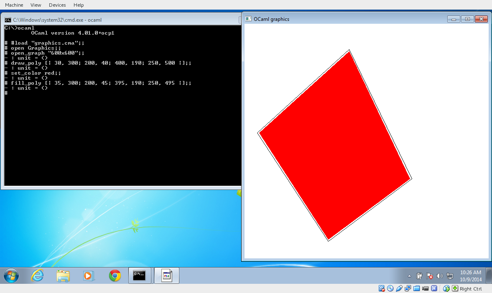

OCPWin, an OCaml distribution for Windows
|
OCPWin is a binary OCaml distribution for Windows. It is self-contained and runs natively on Windows, which means you can generate OCaml applications with it without installing Cygwin or Windows SDK. The license allows you to distribute applications compiled with OCPWin for commercial purpose, as long as you do not distribute the OCaml compiler itself. |
 |
{kind=link}
Download and Install
Find the most recent version for your system (64bits works only on 64bits Windows, 32bits works on both 32 and 64 bit windows), and then follow the step by step instructions below.
| 32bits versions | 32bits installers |
| 64bits versions | 64bits installers |
| Graphical Install | Installation Instructions for the Graphical installers |
| Manual Install | Installation Instructions for zip files |
Usage
From 2016, OCPWin is managed by a tool
called ocpwin.exe. The tool was mostly introduced to
avoid the PATH corrupting bug in NSIS installer.
Thanks to this tool, it is now possible to install multiple
versions of OCPWin at the same time on a computer, and to
use ocpwin.exe to switch between them.
$ ocpwin.exe -list 4.01.0+ocp1-msvc64-20160113 4.01.0+ocp1-msvc32-20160113 4.01.0+ocp1-full-mingw64-20160113 $ ocpwin.exe -switch 4.01.0+ocp1-full-mingw64-20160113
Unfortunately, ocpwin.exe cannot change the PATH in
the current shell, so after using ocpwin -switch, you
should start a new terminal to enjoy the new settings.
However, it is possible to use wrappers to avoid this problem. If you use:
ocpwin.exe -multi-switch true
ocpwin.exe will create a directory containing wrappers
for all the OCaml commands, and add it in top of the PATH. These
wrappers will always select the current switch OCaml commands, so you
that any call to ocpwin.exe -switch will be immediatly
seen in the current terminal.
It is possible to remove these wrappers by calling:
ocpwin.exe -multi-switch false
Components
OCPWin installs the following software:
| OCaml 4.01.0 | The OCaml distribution, version 4.01.0 |
| FlexDLL | A smart linker for OCaml |
| MinGW | The GCC toolchain for Windows |
| ocp-build | A simple build system for OCaml |
| Some Extensions | Included OCaml Extensions by OCamlPro |
Links
| Github | Knowledge Database (release notes and documentation) |
| Flow-Builds | Unofficial builds of Facebook's Flow(type) language, using OcpWin |